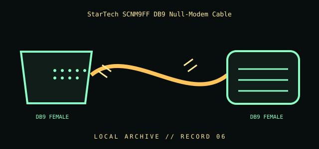

[ INDIVIDUAL COMPONENT // CABLES & ADAPTERS ]
StarTech SCNM9FF DB9 Null-Modem Cable
A null-modem cable for directly linking compatible serial devices by crossing the required transmit/receive signals. The exact handshaking wiring can differ among cable designs.

IDENTIFICATION / SAFETY: Match the complete part number, connector direction, host requirements, and revision to manufacturer documentation. A matching connector shape is not proof of protocol or electrical compatibility.
Specifications
| Catalog subcategory | Serial and converter cables |
|---|---|
| Catalog identity | StarTech.com SCNM9FF female-to-female DB9 serial null-modem cable |
| Protocol / standard | StarTech model SCNM9FF; DB9 female-to-female null-modem cable. The manufacturer identifies it for serial data transfer; consult its product documentation for the applicable wiring and use. |
| Connector ends | DB9 FEMALE → DB9 FEMALE; direction and gender are specified where the manufacturer source verifies them. |
Compatibility & electrical hazards
This is not a straight-through extension cable and is not a USB-to-serial converter. Confirm the exact null-modem wiring and handshake needs at both endpoints; “null modem” products may cross different control lines. Match RS-232, connector gender, and device roles before connecting.
Archival & handling notes
Mark the connector genders and null-modem function on the storage label. Preserve any supplied pinout sheet with the cable; avoid assuming an unmarked old cable is null-modem based only on its ends.
For collection records, photograph both connector faces and all labels; record manufacturer, complete SKU, revision, provenance, condition, and the source document used for identification. Do not apply power to an unidentified or damaged cable.
Sources & further reading
- StarTech — SCNM9FF DB9 null-modem serial cableManufacturer product identification and serial-cable use.
- TIA — Standards informationReference for the applicable TIA-232 interface standard; cable wiring remains model-specific.
Source values are limited to the linked manufacturer or standards documentation. Features not stated there are intentionally left unspecified; confirm the exact cable revision and host-device manuals before use.